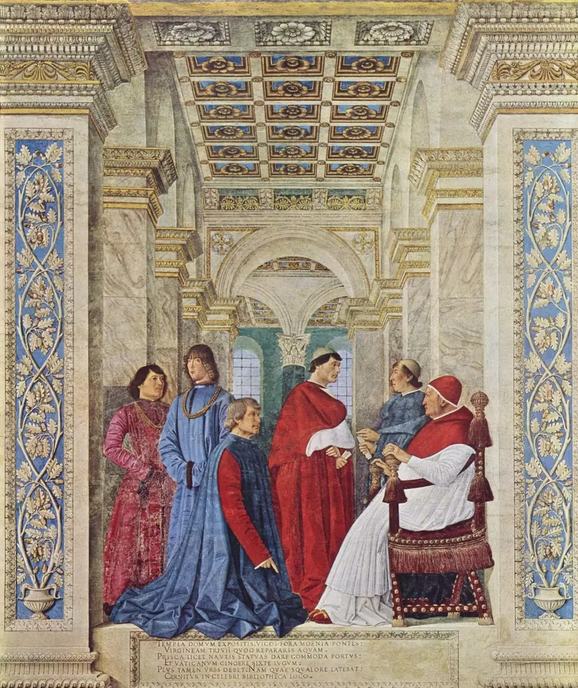
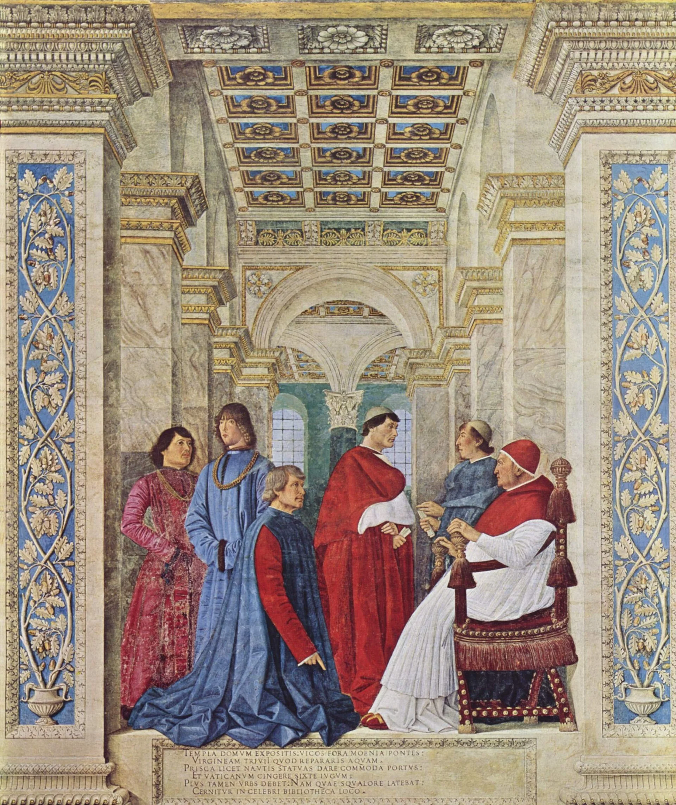
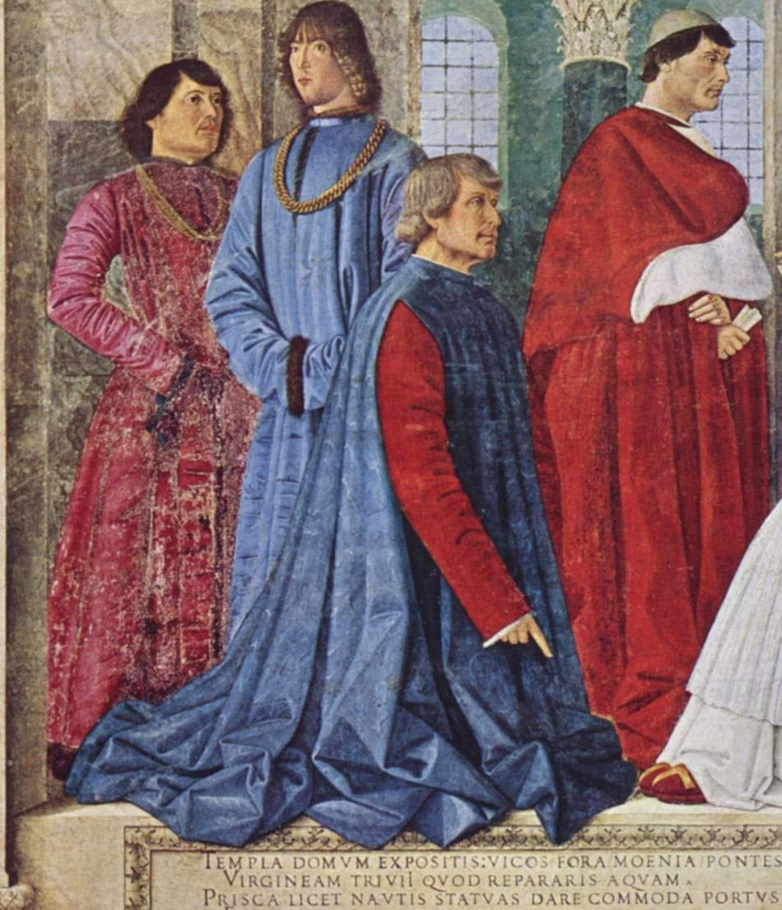
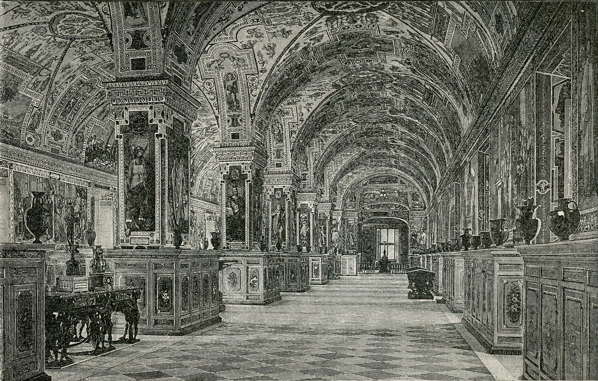
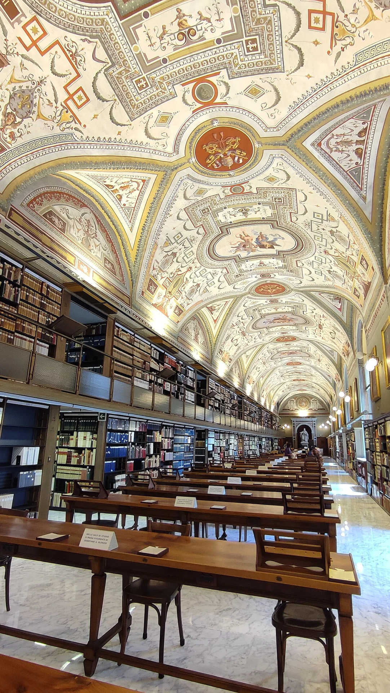

아직 펼치지 않은 카드책을 지키는 약속 · 3바티칸 사도 도서관15세기 교황은 로마에 ‘누구나 쓰는 도서관’을 꿈꿨어요. 이 그림 속에서 무릎을 꿇은 사람은 무엇을 맡게 되었을까요?교황님 앞에서 무릎 꿇은 사람은 누굴까?
1475년바티칸 · 교황청 도서관의 라틴어 방
바티칸 사도 도서관
1475년, 교황 식스토 4세가 바티칸에 학자들을 위한 도서관을 세웠어요. 첫 방인 라틴어 방에 들어서면, 문 맞은편 벽에 그 일을 기린 벽화가 있었어요. 벽화 속 작은 것들을 하나씩 찾아보세요.
옛날 교황님이 학자들이 와서 책을 읽는 도서관을 만들었대. 도서관 벽에 그린 그림 속 숨은 것들을 찾아볼까?
검수 전 시안이에요(기준서 1판). 장면에는 바티칸 사도 도서관과 바티칸 박물관의 설명, 1899년 J. W. 클라크의 연구, 1993년 미국 의회도서관 전시 자료에 있는 것만 옮겼어요. 상상은 ‘눈 감고 상상해 보기’에만 썼어요.
시안 확인용카드 단계 미리 보기
1
학자들을 위한 도서관
15세기 중반, 교황 니콜라오 5세는 교황청의 옛 손글씨 책을 학자들이 와서 읽고 공부할 수 있게 하려 했어요. 그가 교황이 될 때 350권이던 책은, 세상을 떠날 무렵 1,200권쯤으로 늘었어요.
그는 교황 혼자 보는 책방이 아니라, 배운 사람들이 함께 쓰는 도서관을 생각했어요. 그 생각에 자리와 질서와 짜임을 준 사람은 20년 뒤의 교황 식스토 4세였어요.
“배우고 공부하는 이들의 편리와 영예를 위하여”
식스토 4세의 칙서 「싸우는 교회의 영광을 위하여(Ad decorem militantis Ecclesiae)」 머리말 · 레너드 보일 신부의 영어 옮김을 이 안내서가 우리말로 옮김
1475년 6월 15일, 식스토 4세는 이 칙서로 도서관을 정식으로 세우고, 학자 플라티나에게 도서관을 맡기고, 꾸려 갈 돈도 마련했어요.
그해 플라티나가 서명한 목록에는 2,527권이 적혀 있어요. 라틴어 책 1,757권, 그리스어 책 770권이에요.
옛날 교황님들이 학자들이 와서 같이 읽는 도서관을 만들고 싶어 했대.
물어보기모두 같이 쓰는 도서관이 있으면, 무엇이 좋을까?
2
라틴어 방의 벽화
도서관은 바티칸 궁전 1층의 방들에 자리 잡았어요. 안뜰에서 바로 들어서는 첫 방이 라틴어 방, 둘째 방이 그리스어 방이었어요. 더 귀한 책은 따로 방을 두었고, 1481년에는 교황청 기록을 두는 넷째 방이 더해졌어요.
책은 ‘반코’라는 긴 책상에 놓였는데, 쇠막대와 자물쇠와 사슬이 달려 있었어요. 그리고 라틴어 방의 북쪽 벽, 들어오는 문 맞은편에 1477년 무렵 멜로초 다 포를리가 이 벽화를 그렸어요.
벽화 속 작은 것들을 하나씩 눌러 보세요.

멜로초 다 포를리 「식스토 4세가 플라티나를 도서관장으로 세우다」, 1477년 무렵 · 바티칸 박물관 · 그림: 멜로초 다 포를리 · 퍼블릭 도메인 · 위키미디어 공용
그림 위의 숫자나 아래 번호를 눌러 보세요.
여섯 곳을 다 찾았어요. 이 벽화는 라틴어 방 북쪽 벽, 들어오는 문 맞은편에 있었어요.
벽화는 1800년대 초에 벽에서 떼어 내 화폭으로 옮겼고, 지금은 바티칸 박물관 미술관에 있어요. 세로 3.7m, 가로 3.15m의 큰 그림이에요.
라틴어 방에서 이 벽화를 본 1475년의 학자라면, 다음엔 어느 방으로 가 볼까요?
도서관 벽에 그린 큰 그림이야. 숨은 도토리랑 손가락을 찾아볼까?
물어보기그림 속 사람들은 무슨 이야기를 하고 있을까?
3
빌려 가고, 돌려주고
이 도서관은 책을 빌려주기도 했어요. 빌리는 사람이 기록부에 자기 이름과 책 제목을 적었고, 책이 돌아오면 사서가 그 줄을 지웠어요. 1475년부터 1547년까지의 대출 기록이 지금도 남아 있어요.
사서 플라티나는 기록부 첫머리에 이런 경고를 적었어요.

“교황의 도서관에서 책을 빌리며 여기에 이름을 적는 사람은, 아주 짧은 때 안에 상하지 않게 돌려주지 않으면 교황의 노여움과 저주를 받을 것이다.”
플라티나, 대출 기록부 첫머리 · J. W. 클라크가 1899년에 라틴어의 뜻을 풀어 옮긴 영어를 이 안내서가 우리말로 옮김
1475년 6월 30일에는 도서관 책을 돌려주지 않고 가진 사람을 교회에서 내치겠다는 칙서까지 나왔어요. 기록부에는 철학자 피코 델라 미란돌라가 로저 베이컨의 책을 빌렸다가 돌려준 일도 남아 있어요.
1565년에는 훗날 성인으로 공경받는 카를로 보로메오가 책 열두 권을 돌려주고 영수증을 받았어요. 성인도 도서관 책은 돌려주어야 했지요.
책을 빌리면 기록부에 이름을 적었대. 안 돌려주면 혼난다고 무섭게 적어 놨어!
물어보기빌린 책을 돌려줄 때, 너는 무엇을 꼭 지킬래?
4
좁아진 방, 새 건물
책은 계속 늘었어요. 1475년 2,527권이던 책은 1481년 3,498권이 되었어요.
첫 자리가 너무 좁아지자, 1587년부터 1589년까지 교황 식스토 5세가 건축가 도메니코 폰타나에게 새 도서관 건물을 짓게 했어요. 그 꼭대기 층의 큰 방이 ‘시스티나 홀’이에요.

위 그림은 1894년 목판화예요. 기둥마다 그림이 그려진 긴 방을 따라 책장이 늘어서 있어요. 위키미디어 공용은 이 그림을 시스티나 홀의 옛 모습으로 분류해요.
책이 너무 많아져서 새 건물을 지었대!
물어보기책이 계속 늘어나면, 너라면 어떻게 할래?
눈 감고 상상해 보기
1477년, 라틴어 방의 문을 열고 들어서요. 긴 책상마다 사슬에 매인 책이 놓여 있고, 문 맞은편 벽에는 새로 그린 벽화가 선명해요. 누군가 책장을 넘기는 소리, 사슬이 책상에 닿는 낮은 소리. 이 방은 공부하러 온 사람들에게 열려 있어요.
눈을 감아 봐. 커다란 도서관 문을 열어. 책상마다 책이 사슬에 묶여 있고, 벽에는 커다란 그림이 있어. 사각사각, 책장 넘기는 소리!
나의 자리
문은 닫혀 있어도 다른 길로 열어 줄 수 있는 것이 내게 있나요?
보고 싶은데 못 들어가는 곳이 있다면 어떻게 할래?
마음에 닿는 한 줄을 고르거나 직접 써 보세요. 한 줄을 남기면 이 자리의 도장이 찍혀요. 이 기기에만 저장돼요.
더 깊이
궁금한 칸만 펼쳐 읽어도 괜찮아요.
알고 보면
플라티나 본명은 바르톨로메오 사키예요. 1475년 2월 28일 도서관을 맡아, 1481년 세상을 떠날 때까지 일했어요.
사슬 걸린 책상 이 도서관의 책도 긴 책상(반코)에 놓여 쇠막대와 자물쇠, 사슬로 매여 있었어요. 앞 카드의 헤리퍼드 책장과 같은 생각이에요.
몽테뉴가 본 책 1581년, 프랑스 작가 몽테뉴가 이 도서관에서 플루타르코스와 세네카의 손글씨 책을 보았어요.
벽화를 그린 사람 멜로초 다 포를리는 1475년 로마로 와서 교황청에서 이름을 얻었어요. 이 벽화는 바티칸 박물관 미술관 4번 방에 있어요.
기록마다 다른 점
니콜라오 5세의 책 바티칸 도서관은 그의 책이 350권에서 1,200권쯤으로 늘었다고 적어요. 그와 같은 때를 산 교황 비오 2세는 3,000권쯤이었다고 적었어요. 보일 신부는 식스토 4세가 물려받은 책을 1,100권쯤으로 봐요.
방은 몇 개였나 바티칸 도서관 누리집은 네 방이었다고 적어요. 보일 신부는 처음에 세 방이었고, 1481년에 넷째 방이 더해졌다고 적어요.
어느 손일까 바티칸 박물관 누리집의 이탈리아어·영어·독일어 설명은 플라티나가 ‘오른손’ 검지로, 프랑스어 설명은 ‘왼손’ 검지로 가리킨다고 적어요. 벽화를 보고 직접 가늠해 보세요.
직접 가 보기

확인한 날 · 2026년 11월 18일 · 바뀌기 쉬운 정보라 정기적으로 다시 확인해요
바티칸 사도 도서관은 둘러보는 곳이 아니에요. 자격을 갖춘 연구자와 교수, 박사 과정 학생이 열람증을 받아 성 안나 문으로 들어가요.
멜로초의 벽화는 바티칸 박물관 미술관(피나코테카) 4번 방에서 누구나 볼 수 있어요. 여는 때는 바티칸 박물관 누리집에서 확인하세요.
벽화 속 여섯 곳 금박
벽화 속 여섯 곳을 모두 찾아 읽으면 카드에 금박이 입혀져요.
벽화 속 여섯 곳을 모두 찾아 읽기
1475년의 학자라면 채색
둘 가운데 하나만 해도 카드가 채색돼요.
라틴어 방에서 다음에 갈 방 고르기
아이와 함께 ‘영화처럼 보기’를 끝까지 보기
근거 보기 (11)
- 바티칸 사도 도서관: 도서관의 역사 — 니콜라오 5세(350권→1,200권쯤), 1475년 6월 15일 칙서·플라티나·살림 돈, 네 방, 2,527권(1475)→3,498권(1481), 1475~1547년 대출 기록, 1587~1589년 식스토 5세·도메니코 폰타나·시스티나 홀
- 바티칸 박물관: 멜로초 다 포를리 「식스토 4세가 플라티나를 도서관장으로 세우다」 — 옛 도서관 방에서 떼어 옴, 1475년 로마로 온 멜로초, 플라티나가 직접 지은 글을 가리킴, 라파엘레 리아리오·지롤라모 리아리오·조반니 델라 로베레, 웅장한 건물, 370×315cm
- 바티칸 박물관(프랑스어): 같은 그림 — 플라티나가 ‘왼손’ 검지로 가리킨다고 적음
- Leonard E. Boyle, 「The Vatican Library」(미국 의회도서관 「Rome Reborn」 전시, 1993) — 니콜라오 5세의 공공 도서관 생각, 칙서 머리말, 자리와 질서와 짜임, 세 방과 1481년 넷째 방, 그리스어 방 천장의 문장, 비오 2세의 3,000권, 몽테뉴(1581)
- 미국 의회도서관 「Rome Reborn」 전시: 도서관이 모양을 갖추다 — 대출 기록부(이름과 제목, 돌려주면 줄을 지움), 피코 델라 미란돌라와 로저 베이컨, 카를로 보로메오의 열두 권 영수증(1565)
- J. W. Clark, 「On the Vatican Library of Sixtus IV」(1899, Wikisource) — 1475년 2월 28일 플라티나, 2,527권(그리스어 770·라틴어 1,757), 네 방의 차례, 반코의 쇠막대·자물쇠·사슬, 1481년 책상 수, 라틴어 방 북쪽 벽의 벽화, 대출 기록부와 경고, 1475년 6월 30일 칙서
- University of Oxford, Cabinet: 멜로초의 벽화 — 돌판의 시가 기리는 일(성당·병원·성벽·다리·물길)과 마지막 줄의 영어 옮김
- Victoria and Albert Museum: 델라 로베레 집안 문장 — 참나무(이탈리아어 rovere), 1471년 교황이 된 식스토 4세
- Antonio Paolucci, 「Melozzo a Forlì」(Artedossier 2011년 4월, 바티칸 박물관 PDF) — 1800년대 초에 떼어 낸 벽화
- 바티칸 사도 도서관: 열람 자격 — 연구자·교수·박사 과정 학생, 성 안나 문 · 2026-11-18 확인
- 위키미디어 공용: 1894년 목판화 정보(시스티나 홀의 옛 그림으로 분류)
그림·사진·소리 출처
‘처음 만나는 기독교 문화’의 깊은 카드예요. 실제 인물의 사진은 쓰지 않았어요. 카드 단계와 남긴 글은 이 기기에만 저장돼요.